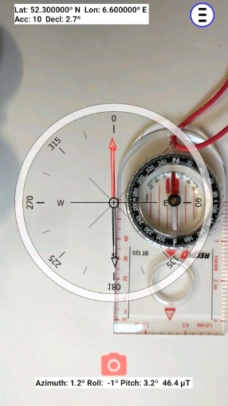

How to calibrate the compass of your phone or tablet ?
At some point the app comes with a "Calibrate the compass" warning or message.
Perhaps it is even clearly visible that the compass needle is pointing in the wrong direction.
The simplest assumption, given by many, is that the app must be wrong, without any proof or investigating of the issue.
But almost always it has to do with the phone's sensors, and not with the app.
You may think that after you have waved your phone 3 times in a figure 8 :
"The compass is calibrated, done !!"
but it often is just the beginning of a painstaking exercise to get it calibrated.
And it does not always lead to success. It may even be imposible to calibrate the phone's compass properly.
There is only ONE way to know that the compass calibration was successfull:
COMPARE IT WITH A REAL COMPASS in both NORTH and SOUTH DIRECTION !!
Compare it while facing North, then rotate exactly 180 degrees and compare it while facing South.
To rotate exactly 180 degrees use a reference line, drawn on the ground, or edge.
See the center and right pictures where the edge of a RECTA compass is used.

Just a warning: verify the needle of the real compass can rotate freely within the compass housing.
It can take up to an hour, outside in the open air, before a compass calibration is successfull.
A succesfull calibration may only last just a moment, until: the phone is too close to disturbing iron or a magnet again.
A phone's compass can have a constant offset, or worse, a random offset in azimuth.
Some reasons why the compass gets disturbed:
A compass and a magnet or an iron object do NOT go together !!
The phone has a case with magnetic closure. This is one of the main reasons why the compass is wrong.
You have multiple phones and stack them, maybe some even have a case with magnetic closure.
You were inside a house or building with iron reinforced floors, walls and or doors.
The phone was to close to iron or magnetic objects like: keys, a watch, radio, tv, tools, a satellte dish, a phone holder for the car with magnets.
You calibrate the phone inside a building and use it outside.
Charging the phone. Charging may produce magnetic interference within the phone but the charger also emits a magnetic field.
The speakers of the phone are too loud. Speakers generate often magnetic fields.
End of life of the phone. Yes, old age does that too. The hardware deteriorates.
It can take up to 15-30 minuts before the compass has adjusted itsself
To calibrate the compass of the phone, the phone must be powered ON and an app that uses the compass must be running.
Do this in the open air, outside.
Preferably calibrate the compass in the 2 directions: the direction you want to use it and in the opposite direction.
Compare the calibrated compass app with a real compass, facing North and facing South !!
While facing south calibrate the compass, and then while facing/pointing north calibrate it again. Or the other way around.
When you do calibrate in just 1 direction, the compass may show a deviation of up to 25º when you turn exactly 180º in azimuth.
You can test this with a fixed straight reference line or edge of an object laying on the ground. See the photos on top of this page.
What to do to prevent compass problems:
Remove the magnets (2) from your phone case (if it has a magnetic closure).
Avoid getting close to iron objects and any magnets.
DO NOT use the compass inside your home. There is just to much interference of iron and magnetic objects.
Let the compass app run for at least 15 minuts, outside.
Which methods can be used to calibrate the compass:
While facing North: wave your phone 3 times in a figure 8 pattern,
AND while facing South: wave your phone 3 times in a figure 8 pattern,
When waving twist the phone (your arm) in all possible ways.
While facing North: Rotate the phone slowly 3 times along each of its axis in roll, pitch and azimuth.
AND while facing South: Rotate the phone slowly 3 times along each of its axis in roll, pitch and azimuth.
Switch between calibration methods. Try both.
When all fails: reset you phone. This is sometimes an 'end-of-life is coming' indication for the phone.